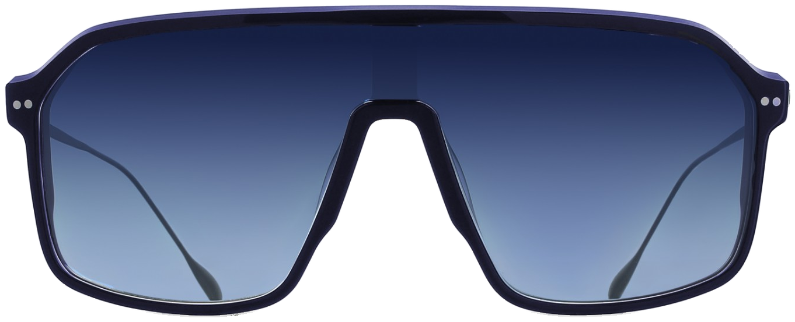

Pigeard Opticiens · depuis 1863
Nogent-le-Rotrou — Brou — La Loupe
Édition limitée

Acétate
bleu profond
Verres solaires
bleu dégradé
Branches ultra-fines
en acier inoxydable
Coloris C04
bleu · argent
1000exemplaires
disponible en magasin
Pigeard Opticiens · depuis 1863
Nogent-le-Rotrou — Brou — La Loupe